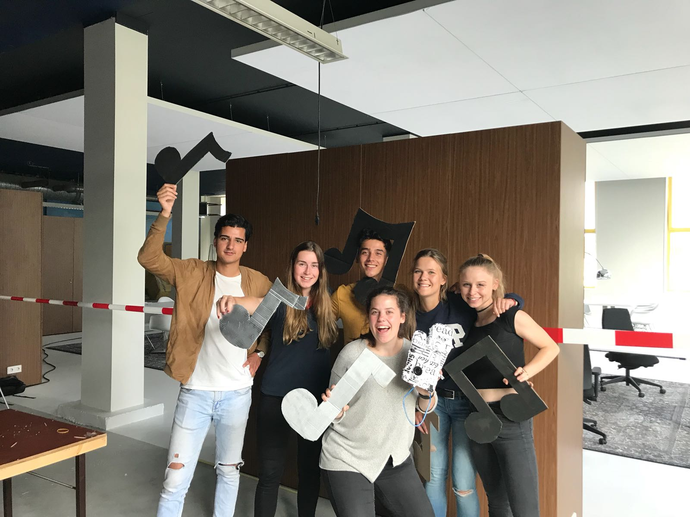
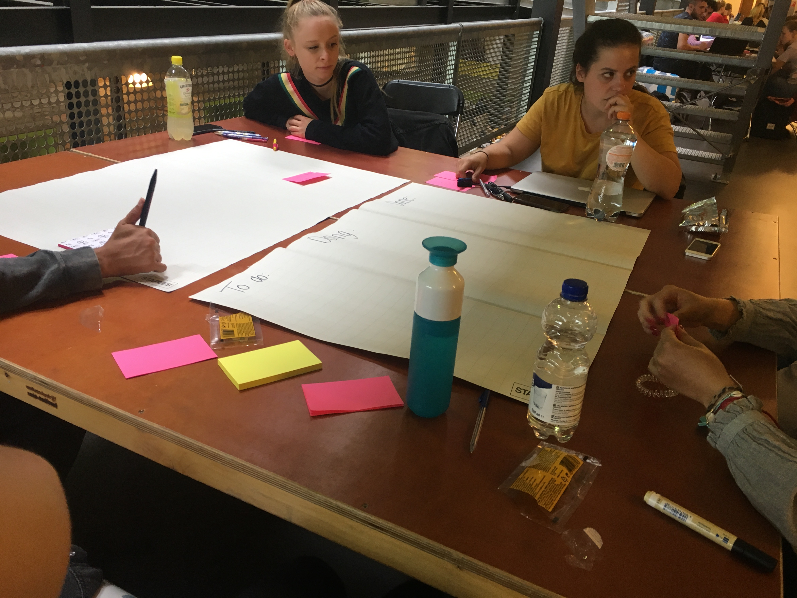
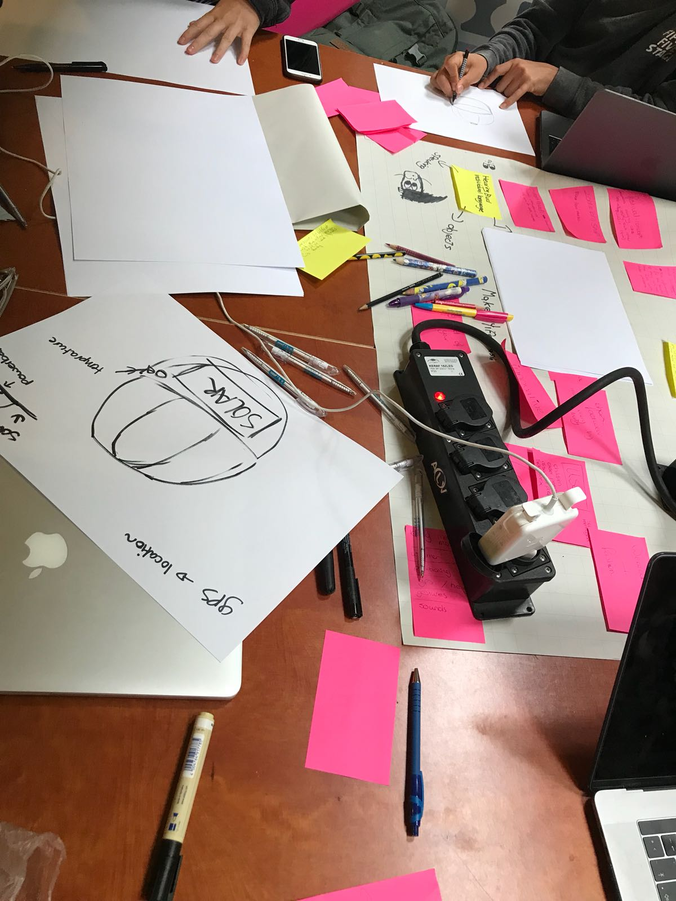
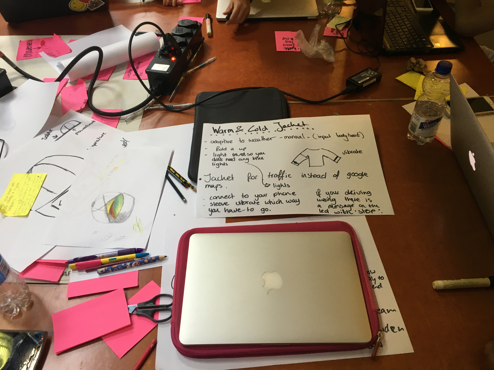
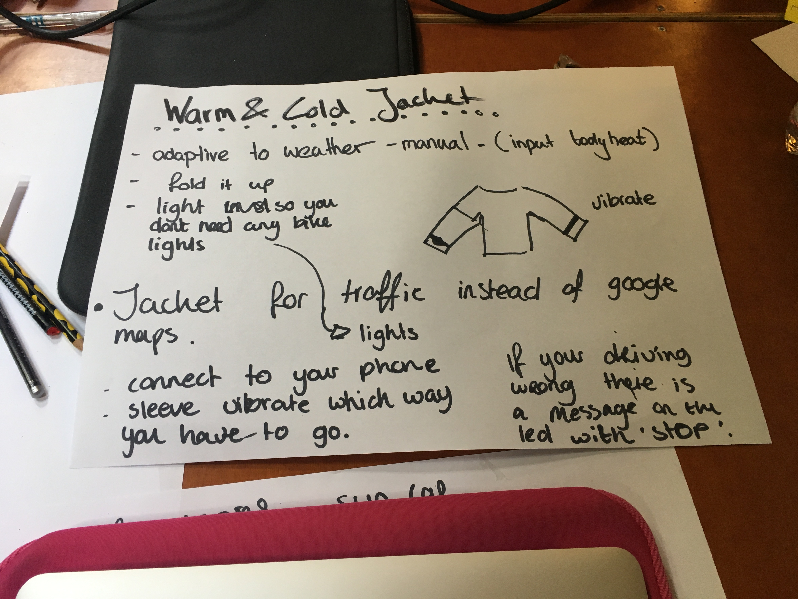
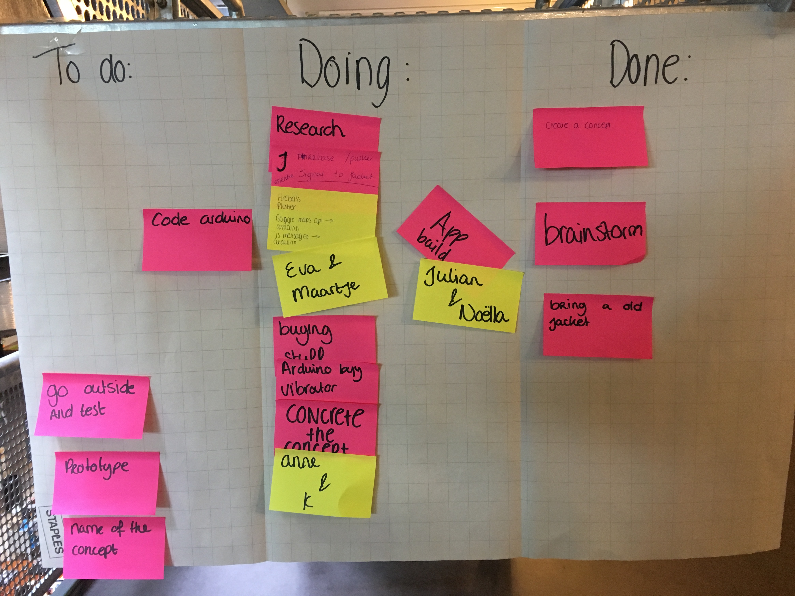
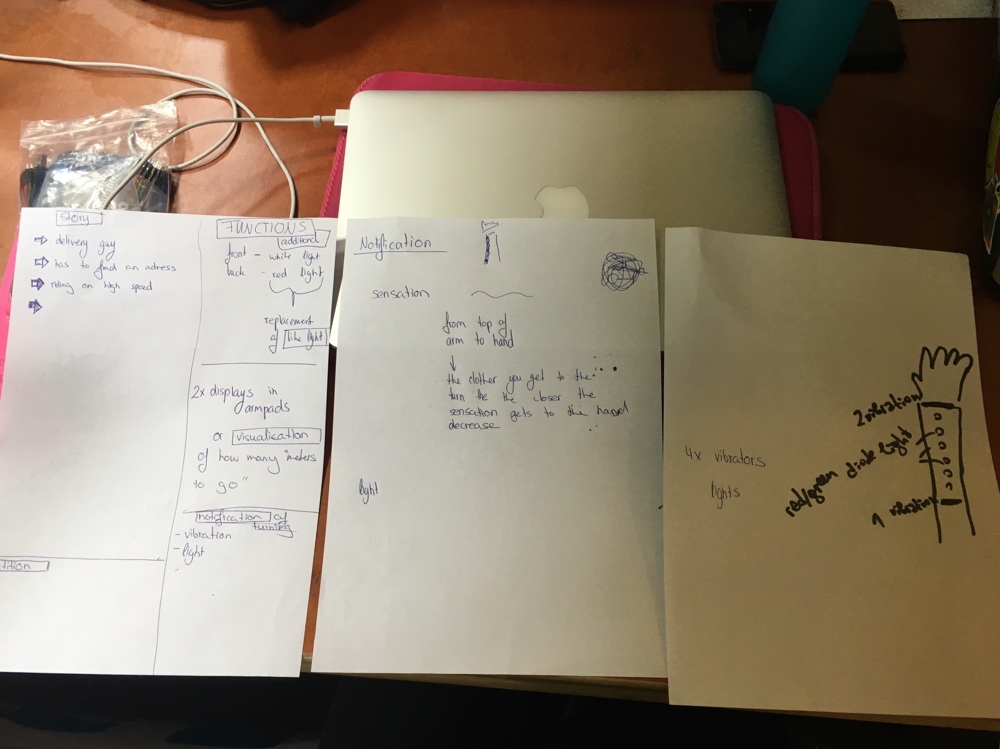
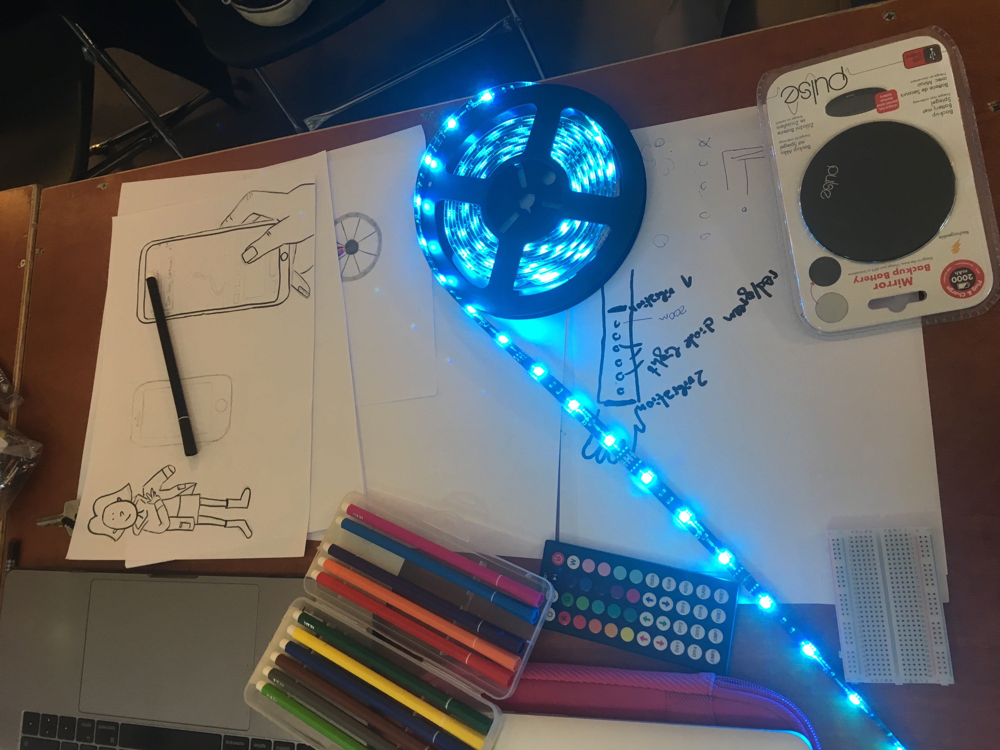

Vandaag zijn we gestart met de HCI labweken. Ik heb de topic 'wearables' toegewezen gekregen. Dit was echter ook mijn eerste keuze. Als eerste heb ik kennis gemaakt met mijn groepsleden. Ik zit in de groep met een Bulgaarse, Duitse en drie Nederlandse studenten. Dit was wel even omschakelen omdat ik Engels spreken niet al te makkelijk vindt. Naar mate de dag voorderde ging het al beter. Hieronder is onze groepsfoto te zien:
Toen het kennismaken erop zat, zijn we begonnen met een tactiek te bedenken om concepten te bedenken. Aangezien je in principe alles mocht maken wat realiseerbaar is, hadden we wat moeite met de opstart. We hebben als eerste hebben we een scrum bord gemaakt en vervolgens zijn we begonnen met brainstormen. Ik stelde voor om eerst een doelgroep te kiezen en vervolgens te kijken of deze doelgroep tegen problemen aanloopt. Vervolgens schoot het niet bepaald op met concepten bedenken en hebben we gebrainstormt over de vraag waarvoor iemand een wearable nodig heeft. Hier kwam uit dat het vooral het leven makkelijker moet maken. Vervolgens hebben we onderzoek gedaan naar de mogelijkheden en daarbij horende technologie om te kijken om minder breed te gaan denken en sneller een haalbaar concept kunnen verzinnen. De tactiek stond dus niet bepaald vast en wanneer er een idee bij iemand te boven schoot, zei hij of zij dat in de groep. Vervolgens dachten we dit idee verder uit en vulde aan waar nodig. We hebben uiteindelijk heel veel goede concepten verzonnen, alleen liepen we tegen het probleem aan dat het idee of al bestond of dat het voor ons niet haalbaar was om te realiseren omdat het te complex is. Hieronder zal ik een paar van onze concepten benoemen:
Het festival concept: mensen die naar festivals gaan irriteren zich vaak aan het feit dat ze eerst lang in de rij moeten staan om muntjes te kopen en vervolgens ook nog is lang in de rij moeten staan om drinken te halen. Daarnaast is de kans groot dat je je vrienden kwijt raakt op een festival. Deze problemen wilde wij oplossen door een wearable te maken, bijvoorbeeld een pet of polsband waar je zelf munten op kan zetten en ook mee kan betalen. Daarnaast heeft het een gps systeem in zich om je verloren vrienden te vinden op het festival. Wanneer je dichter bij je vriend in de buurt komt, des te sneller gaat de armand knipperen. Een andere uitwerking is dat er in de binnenkant van de pet(klep) de route door middel van lichtgevende pijltjes wordt aangegeven. Echter was dit idee met de gps niet realiseerbaar voor ons en het bestond deels al.
Energie opwekken concepten: ook wanneer men op een festival is of ergens anders dan thuis, is de kans groot dat de batterij van je telefoon leeg is. Daarom hebben wij een pet bedacht met daarin zonnenpaneeltjes die stoom opwekken. Daarnaast zit er in de pet een mini powerbank die je los kan koppelen van de pet en in je mobiel kan pluggen. Een ander concept omtrent energie was een schoen die door middel van beweging energie opwekt. Ook deze heeft een kleine powerbank in zich om vervolgens los te koppelen en in je mobiel te pluggen. Vervolgens dachten we dit ideen in een riem of buiktasje te stoppen om zo door middel van dansende bewegingen ook energie op te wekken. Uit deze concepten bleek dat we ons richtte op de doelgroep die naar festivals gaat.
Deze en nog veel meer ideeën zijn ter spraake gekomen tijdens onze brainstormsessie maar hebben geen definitief concept opgeleverd. Toen we aan het einde van de middag even pauze namen, kwam er een nieuw probleem op een festival te boven. Namelijk dat het moeilijk in is te schatten watvoor kleren je aantrekt en wat het weer zal gaan doen. Om deze reden hadden we een jack bedacht die verstelbaar is van temperatuur. Dit bestond echter al. Toen kwamen we plotseling op het idee om een jack te combineren met verkeer. De temperatuur functie is hierbij echter ook mogelijk, maar we zijn ons gaan richten op de veiligheid en met name van de fietsers. Het uiteindelijke concept luidt als volgt: de wearable jas is gecombineerd met Google maps. Een mobiel in het verkeer is namelijk onveilig, maar soms moet je toch de weg zien te vinden. Daarom hebben wij het idee om een jack te ontwerpen met vibratie en lichtjes in de mouwen. Daarnaast heeft hij lichtjes aan de voor en achterkant die aangaan als het donker is. Ook is er een klein displaytje te zien in de mouw. Google maps is verbonden via bluetooth met het jack. Wanneer je telefoon gewoon in je jaszak zit, maar wel de route vlak voordat je weg ging hebt ingesteld, kom je ook op de plek van bestemming. Het jack vibreert en licht op wanneer de persoon naar links of rechts moet. Daarnaast is op de display te zien over hoeveel meter.




Aan het einde van de dag hebben we het scrumbord compleet gemaakt voor de volgende dag:
Vandaag zijn we gestart met een kort overleg over wat er vandaag gedaan gaat worden. We hebben de taken verdeelt over 3 groepen van 2 personen: een research groep, een concreat concept groep en een app building groep. Ik maakte deel uit van de research groep. Eva en ik zijn begonnen met informatie op te zoeken over Arduino in samenwerking met Google maps en over de elementen die we nodig hebben voor het prototype. Vervolgens hebben wij de concept groep geholpen met een scenario en een storyboard te maken en het idee van de mouwen hebben we verder uitgewerkt: de armen bevatten geen display's meer, maar ledlichtjes die aftellen en 2 vibraties, boven en onder op je onderarm. Vervolgens zijn we naar de action gegaan om spullen te kopen voor het prototype. We hebben hier een 5m lang draad gehaald van 12v waar je de lichtjes naar elke geweste kleur kan aanzetten en een powerbank om de arduino van stroom te voorzien in de jas. Toen we terug waren, kwamen we erachter dat de lichtjes moeilijk aan zijn te sluiten op de arduino omdat de lichtjes te veel volt bevatten. Na verschillende opties te hebben bekeken, hebben we ervoor gekozen om andere ledlichtjes te kopen van 5v. Voor de rest is er door 2 groepsgenoten een aardig begin gemaakt met de app. In het begin waren er wat problemen door de vernieuwde privacy wet. Morgen gaan we verder met het testen van de lichtjes.
  Vandaag zijn we zoals elke dag begonnen met een overleg bij het scrum bord. De taken zijn opnieuw verdeelt. Julian en Noella maakte weer deel uit van het app builing team, Kiril en Anne zijn aan de slag gegaan met een ontwerp voor het prototype en een naam bedenken en Eva en ik zijn aan de slag gegaan met de nieuwe ledlampjes. We wilden starten met de ledlampjes zo de maken dat het verbonden kon worden aan de arduino. Echter vroegen we ons af of we dan de lampjes een voor een konden programmeren zoals de bedoeling was voor de mouwen. Helaas was dit niet het geval en kwamen we erachter dat het misschien een beter idee is om het concept van de aftellende lampjes eerst te vervangen voor knipperende lampjes: hoe dichter je bij de bocht komt, hoe sneller de lampjes gaan knipperen. Dit is namelijk ook bij auto's het geval, wanneer een auto dichter bij een object komt, hoe sneller de auto gaat piepen. Wanneer dit is gelukt kijken we verder of ons eerste idee ook kan werken. Vervolgens zijn we met de Arduino verder gegeaan om te kijken hoe we dit kunnen realiseren.